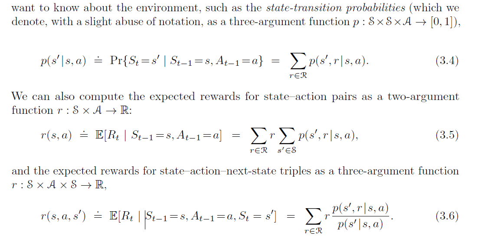
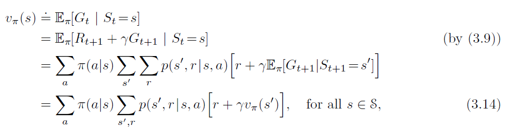
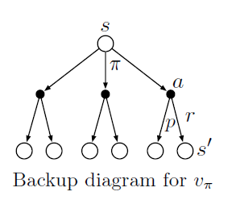
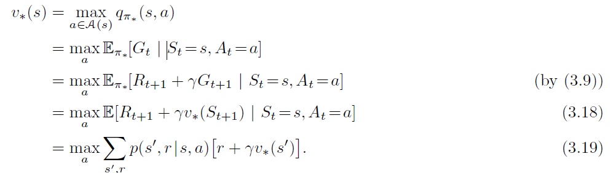
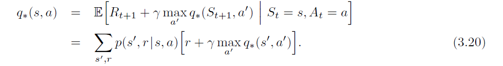
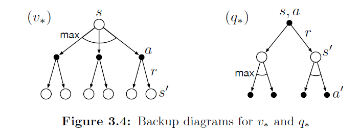

对应章节：《Reinforcement Learning: An Introduction》第二版 Chap 3
感觉这一章就给了一些基础概念，看西瓜书也成啊
3.1 The Agent–Environment Interface
The learner and decision maker is called the agent. The thing it interacts with, comprising everything outside the agent, is called the environment.
One time step later, in part as a consequence of its action, the agent receives a numerical reward, $R_{t+1}\in \textbf{R}$, and finds itself in a new state, $S_{t+1}$.
定义：$p(s', r|s, a)= Pr{S_t=s',R_t=r | S_{t−1}=s,A_{t−1}=a}$
The function p defines the dynamics of the MDP
可以看出在马尔可夫决策过程中，每一个的概率只依靠于前一次的状态于动作
类似的，可以定义以下函数：
The general rule we follow is that anything that cannot be changed arbitrarily by the agent is considered to be outside of it and thus part of its environment.
然后举了几个简单的例子，有兴趣可以去看
3.2 Goals and Rewards
在强化学习中，agent的目标是获取最大化的奖励和。这意味着不能单单只看立即得到的眼前的奖励，而要看长远过程下的奖励之和
奖励信号更应该告诉agent最终目标，而不是其实现过程，如同下棋时，应当是当你赢时给与奖励而不是局部最优时给予，如果那样设定的话可能导致agent追求局部最优而忽略全局
3.3 Returns and Episodes
In general, we seek to maximize the expected return, where the return, denoted $G_t$, is defined as some specific function of the reward sequence. In the simplest case the return is the sum of the rewards:$G_t=R_{t+1} + R_{t+2} + R_{t+3} + · · · + R_T$ , where T is a final time step.
This approach makes sense in applications in which there is a natural notion of final time step, that is, when the agent–environment interaction breaks naturally into subsequences, which we call episodes(有时也用trials)
每一个episode都有一个终止状态，终止状态后将被重置为初始状态
Tasks with episodes of this kind are called episodic tasks（举例：下棋，走迷宫）. In episodic tasks we sometimes need to distinguish the set of all nonterminal states, denoted $S$, from the set of all states plus the terminal state, denoted $S^+$. The time of termination, $T$, is a random variable that normally varies from episode to episode
但也有些任务是一直不会终止的，我们称为continuing tasks, 这样的话我们的$G_t$将会是无限大，故而我们采取一种概念上复杂但是数学上简单的discount定义
$$G_t=R_{t+1} +\gamma R_{t+2} +\gamma^2 R_{t+3} + · · · =R_{t+1} + \gamma G_{t+1}$$
即discounting rate $0 \leq \gamma\leq 1$，决定了未来奖励的当前价值。
3.4 Unified Notation for Episodic and Continuing Tasks
在之后的介绍中，我们两种任务都会探讨，所以我们希望寻求一种能够通用的表示两种任务的记法
我们可以考虑让episode tasks 在进入终止状态后进入一个特殊的 absorbing state，在这个状态下永远只转移到自身状态并且reward永为0，如下图深色方框：

故而可定义$$Gt=\sum_{k=t+1}^T\gamma^{k−t−1}R_k$$，这个公式包含了$T = \infin$ or $\gamma = 1$ (but not both)的可能性.
3.5 Policies and Value Functions
value functions—functions of states (or of state–action pairs) that estimate how good it is for the agent to be in a given state (or how good it is to perform a given action in a given state).
policy is a mapping from states to probabilities of selecting each possible action.
定义：
state-value function for policy : $v_\pi(s) = E_\pi(G_t | S_t = s) = E_\pi( \sum_{k=0}^{\infty} \gamma^k R_{t+k+1} | S_t =s)$
action-value function for policy: $q_\pi(s, a) = E_\pi(G_t | S_t = s, A_t = a) = E_\pi( \sum_{k=0}^{\infty} \gamma^k R_{t+k+1} | S_t =s, A_t = a)$
我们一般可以通过经验（大量随机实验样本的均值）来获取其估计值，（如Monte Carlo methods），但是当状态空间很大的时候，这是不现实的，那时可以将其当作参数方程，通过调参的方式来得到返回值，其精确度取决于近似方式
满足递归关系, 称为是Bellman equation for $v_\pi$, It expresses a relationship between the value of a state and the values of its successor states. 
如果已知参数（p(s′,r|s,a),π等), 则可以视为线性方程组，对于小规模的状态集，可以直接求解，其解就是值函数
对应的backup diagram：
3.6 Optimal Policies and Optimal Value Functions
optimal policy：$\pi_*$
optimal state-value function, denoted $v_$ and defined as $v_(s) = \max_\pi v_\pi(s)$
optimal action-value function, denoted $q_$, and defined as $q_(s,a) = max_\pi q_\pi(s,a)$
有关系： $q_(s, a) = E[R_{t+1} + \gamma v_(S_{t+1}) | S_t=s,A_t=a]$ .
因为$v_*$也是policy的value-function，故而其也满足贝尔曼方程的条件，称为Bellman optimality equation.
可以写作： 
最后两行（3.18，3.19）是两种常见的不同的表达形式
对应的有： 
对应的backup diagram为： 
For finite MDPs, the Bellman optimality equation for $v_{*}$ has a unique solution。如果有n个状态，那么就得到一个n个变量的n个等式，如果知道必要的参数，可以通过解非线性方程组的方式对其进行求解
解出来后： If you have the optimal value function, $v_{}$, then the actions that appear best after a one-step search will be optimal actions. Another way of saying this is that any policy that is greedy with respect to the optimal evaluation function $v_{}$ is an optimal policy.
With $q_{}$, the agent does not even have to do a one-step-ahead search: for any state s, it can simply find any action that maximizes $q_{}(s, a)$.

但是这种方式的缺点在于：我们需要精确的知道环境的动态性质且有足够的计算资源去完成所有运算，同时环境需满足马尔科夫性质
Many different decision-making methods can be viewed as ways of approximately solving the Bellman optimality equation. For example, heuristic search methods can be viewed as expanding the right-hand side of (3.19) several times, up to some depth, forming a “tree” of possibilities, and then using a heuristic evaluation function to approximate $v_{}$ at the “leaf” nodes. (Heuristic search methods such as $A^$ are almost always based on the episodic case.) The methods of dynamic programming can be related even more closely to the Bellman optimality equation. Many reinforcement learning methods can be clearly understood as approximately solving the Bellman optimality equation, using actual experienced transitions in place of knowledge of the expected transitions. We consider a variety of such methods in the following chapters.